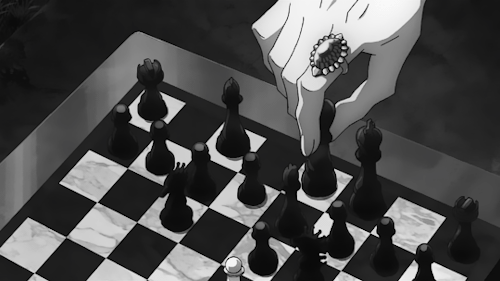

Checkmate (often shortened to mate) is any game position in chess and other chess-like games in which a player's king is in check (threatened with capture) and there is no possible escape. Checkmating the opponent wins the game.
In chess, the king is never actually captured—the player loses as soon as the player's king is checkmated. In formal games, it is usually considered good etiquette to resign an inevitably lost game before being checkmated.
If a player is not in check but has no legal move, then it is stalemate, and the game immediately ends in a draw.

There are four fundamental checkmates when one side has only their king and the other side has only the minimum material needed to force checkmate, i.e. one queen, one rook, two bishops on opposite-colored squares, or a bishop and a knight. The king must help in accomplishing all of these checkmates.[20] If the winning side has more material, checkmates are easier.
The checkmate with the queen is the most common, and easiest to achieve. It often occurs after a pawn has queened. A checkmate with the rook is also common, but a checkmate with two bishops or with a bishop and knight occurs infrequently. The two-bishop checkmate is fairly easy to accomplish, but the bishop and knight checkmate is difficult and requires precision.